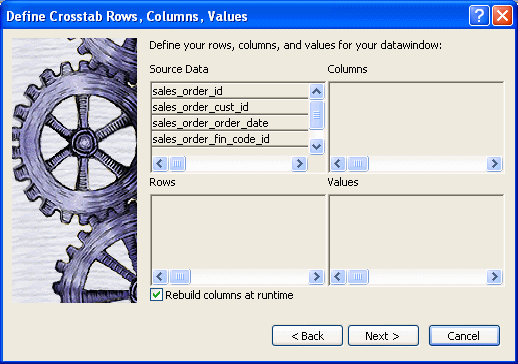
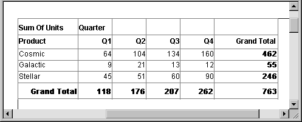
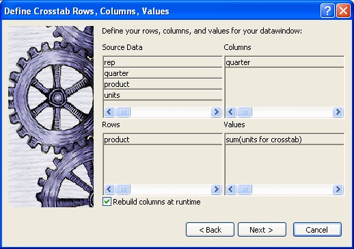
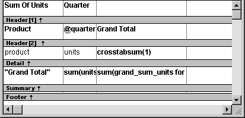
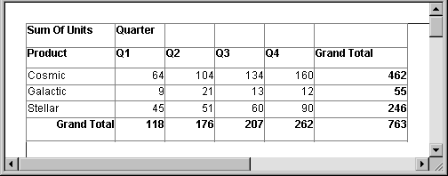
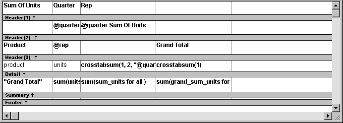
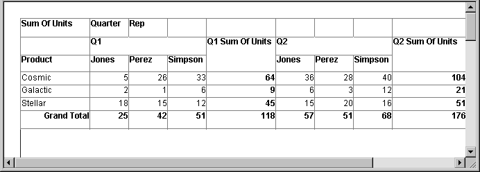

You associate crosstab columns, rows, and cell values with columns in a database table or other data source.
 To associate data with a crosstab:
To associate data with a crosstab:
If you are defining a new crosstab, the Define Crosstab Rows, Columns, Values dialog box displays after you specify the data source.

Specify the database columns that will populate the columns, rows, and values in the crosstab, as described below.
To build a dynamic crosstab, make sure theRebuild Columns At Runtime box is selected.
For information about static crosstabs, see "Creating static crosstabs".
Click Next.
To define the crosstab, drag the column names from the Source Data box in the Crosstab Definition dialog box (or Wizard page) into the Columns, Rows, or Values box, as appropriate.
If you change your mind or want to edit the DataWindow object later, select Design>Crosstab from the menu bar and drag the column name out of the Columns, Row, or Values box and drop it. Then specify a different column.
The process is illustrated using the following dynamic crosstab. The columns in the database are Rep, Quarter, Product, and Units. The crosstab shows the number of printers sold by Quarter:

You use the Columns box to specify one or more of the retrieved columns to provide the columns in the crosstab. When users run the crosstab, there is one column in the crosstab for each unique value of the database column(s) you specify here.
 To specify the crosstab's columns:
To specify the crosstab's columns:
Drag the database column from the Source Data box into the Columns box.
Using the printer example, to create a crosstab where the quarters form the columns, specify Quarter as the Columns value. Because there are four values in the table for Quarter (Q1, Q2, Q3, and Q4), there are four columns in the crosstab.
You use the Rows box to specify one or more of the retrieved columns to provide the rows in the crosstab. When users run the crosstab, there is one row in the crosstab for each unique value of the database column(s) you specify here.
 To specify the crosstab's rows:
To specify the crosstab's rows:
Drag the database column from the Source Data box into the Rows box.
Using the printer example, to create a crosstab where the printers form the rows, specify Product as the Rows value. Because there are three products (Cosmic, Galactic, and Stellar), at runtime there are three rows in the crosstab.
 Columns that use code tables If you specify columns in the database that use code tables,
where data is stored with a data value but displayed with more meaningful
display values, the crosstab uses the column's display
values, not the data values. For more information about code tables,
see Chapter 22, "Displaying and Validating
Data ."
Columns that use code tables If you specify columns in the database that use code tables,
where data is stored with a data value but displayed with more meaningful
display values, the crosstab uses the column's display
values, not the data values. For more information about code tables,
see Chapter 22, "Displaying and Validating
Data ."
Each cell in a crosstab holds a value. You specify that value in the Values box. Typically you specify an aggregate function, such as Sum or Avg, to summarize the data. At runtime, each cell has a calculated value based on the function you provide here and the column and row values for the particular cell.
 To specify the crosstab's values:
To specify the crosstab's values:
Drag the database column from the Source Data box into the Values box.
PowerBuilder displays an aggregate function for the value. If the column is numeric, PowerBuilder uses Sum. If the column is not numeric, PowerBuilder uses Count.
If you want to use an aggregate function other than the one suggested by PowerBuilder, double-click the item in the Values box and edit the expression. You can use any of the other aggregate functions supported in the DataWindow painter, such as Max, Min, and Avg.
Using the printer example, you would drag the Units column into the Values box and accept the expression sum(units for crosstab).
Instead of simply specifying database columns, you can use any valid DataWindow expression to define the columns, rows, and values used in the crosstab. You can use any non-object-level DataWindow expression function in the expression.
For example, say a table contains a date column named SaleDate, and you want a column in the crosstab for each month. You could enter the following expression for the Columns definition:
Month(SaleDate)
The Month function returns the integer value (1–12) for the specified month. Using this expression, you get columns labeled 1 through 12 in the crosstab. Each database row for January sales is evaluated in the column under 1, each database row for February sales is evaluated in the column under 2, and so on.
 To specify an expression for columns, rows, or
values:
To specify an expression for columns, rows, or
values:
In the Crosstab Definition dialog box (or wizard page), double-click the item in the Columns, Rows, or Values box.
The Modify Expression dialog box displays.
Specify the expression and click OK.
After you have specified the data for the crosstab's columns, rows, and values, PowerBuilder displays the crosstab definition in the Design view.
For example, to create the dynamic crosstab shown as the "Dynamic crosstab example", you would:

In the Design view, the crosstab looks like this:

Notice that in the Design view, PowerBuilder shows the quarter entries using the symbolic notation @quarter (with dynamic crosstabs, the actual data values are not known at definition time). @quarter is resolved into the actual data values (in this case, Q1, Q2, Q3, and Q4) when the crosstab runs.
The crosstab is generated with summary statistics: the rows and columns are totaled for you.
At this point, the crosstab looks like this in the Preview view with data retrieved:

Typically you specify one database column as the Columns definition and one database column for the Rows definition, as in the printer crosstab. But you can specify as many columns (or expressions) as you want.
For example, consider a crosstab that has the same specification as the crosstab in "Viewing the crosstab", except that two database columns, quarter and rep, have been dragged to the Columns box.
PowerBuilder displays this in the Design view:

This is what you see at runtime:

For each quarter, the crosstab shows sales of each printer by each sales representative.